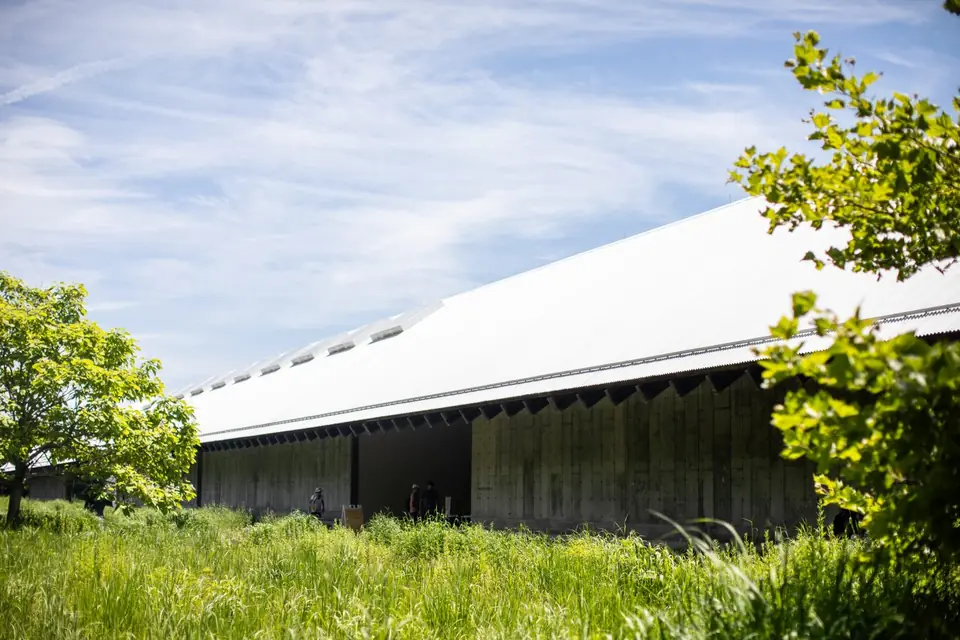
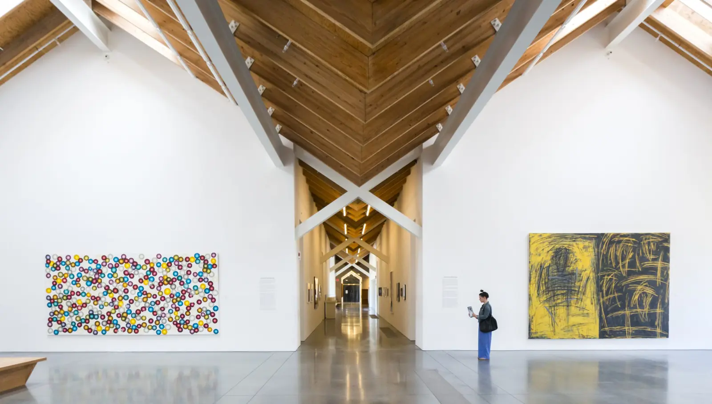

Now on view · Through February 14
The East End,
in abstraction.
A landmark survey tracing how artists transformed the light, land, and creative energy of Long Island’s East End.
Explore the exhibition
Abstract Expressionism: The East End, 1940 to Today
Plan a day shaped by art.


Coming up
Gather around ideas.
Artist talks, films, workshops, music, and family programs bring the galleries into conversation.
See the full calendar
A museum of place
Light, water, sky—and room to see differently.
Designed by Herzog & de Meuron, the Parrish stretches quietly across fourteen acres of Shinnecock ancestral land. Its north-lit galleries echo the studios and agricultural buildings of the East End.
Discover the architectureThe collection
More than 3,600 works.
One remarkable region.
Explore artists whose work has been shaped by the singular landscape, communities, and creative histories of Long Island’s East End.

Belong here
Keep art in motion.
Membership opens the door to more: unlimited admission, exhibition previews, artist-led experiences, and a closer connection to the Parrish community.
Become a member